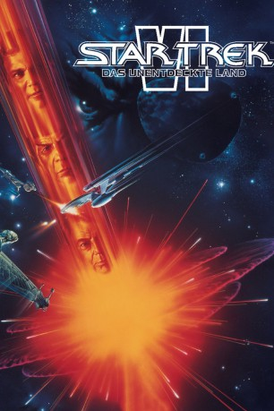

#412 Star Trek 06 - Das unentdeckte Land
Alternativ: Star Trek VI: The Undiscovered Country
Auszeichnungen: für 2 Oscars nominiert
 
 IMDB-Wertung: 7.2 / 10
IMDB-Wertung: 7.2 / 10  Metascore: 65
Metascore: 65 
Nachdem die Explosion eines klingonischen Mondes das Imperium in die Knie zwingt, liegt das fremdartige Konzept eines Friedens mit der Föderation in greifbarer Nähe. Ironischerweise soll gerade Admiral James T. Kirk als Botschafter den Frieden aushandeln. Alle Hoffnungen werden jedoch zunichte gemacht, als die Crew der U.S.S. Enterprise beschuldigt wird, einen klingonischen Diplomaten ermordet zu haben. Stattdessen stehen beide Seiten vor einem alles vernichtenden Krieg...
Jahr: 1991
Dauer: 113 Minuten
FSK: 12
Land: USA Studio: Paramount PicturesTonspuren: DD5.1 - ,
Untertitel: Deutsch, Englisch,
Auflösung: 1080p (1920x818) Größe: 9605 MB
Genre: Action, Thriller, Sci-Fi, Abenteuer
Regisseur: Nicholas Meyer
Drehbuch: Gene Roddenberry, Leonard Nimoy, Lawrence Konner, Mark Rosenthal, Nicholas Meyer
Soundtrack: Cliff Eidelman
Darsteller:
Datei: X:\7+mehr(A-Z)\Star Trek\Star Trek 06 - Das unentdeckte Land (1991, FSK12, 1920x818).mkv seit 21.02.2015
Festplatte: HD Collection-7+mehr(A-Z)+Person
 Es gibt insgesamt 19 Filme in der Gruppe '7+mehr(A-Z)\Star Trek'
Es gibt insgesamt 19 Filme in der Gruppe '7+mehr(A-Z)\Star Trek'